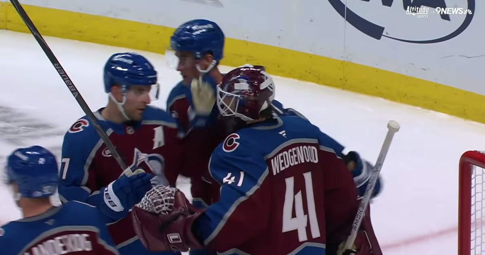

Scott Wedgewood's 25-save shutout blanks the Ducks as the Avalanche end Cutter Gauthier's 10-game goal streak
Scott Wedgewood stopped all 25 shots for his first shutout of the season as the Avalanche beat the Ducks 4-0 in Denver — and ended Cutter Gauthier's 10-game goal streak.

Disclosure: this post contains affiliate links. I earn a commission on qualifying purchases.
The night
Scott Wedgewood made 25 saves for his first shutout of the season as the Colorado Avalanche beat the Anaheim Ducks 4-0 at Ball Arena on Thursday night. It was the 13th shutout of Wedgewood's career, and his seventh as a member of the Avalanche.
The shutout ended the story of the NHL season so far. Cutter Gauthier came into Denver on a 10-game goal streak — four hat tricks in November, 19 goals across the streak, three shy of the NHL record for goals in a calendar month — and Wedgewood stopped him cold. The Ducks rang two shots off the post and kept coming, but nothing got through.
"I think it's hard not to see it. He's on every Instagram page and every media highlight right now. I skated with him this summer," Wedgewood said of Gauthier after the game.
The game around him
Colorado broke it open in the second period. Nicolas Roy scored eight seconds into the middle frame, Brock Nelson added a power-play goal at 3:25 and another at 10:04, and Devon Toews made it 4-0 at 10:33 of the third on a give-and-go with Nelson. Nelson finished with two goals and an assist, Toews had a goal and an assist, and Martin Necas set up two. Lukas Dostal made 23 saves for Anaheim.
The shutout stretched a quieter streak, too: Colorado has now gone 165:25 without allowing a regulation home goal, dating back to November 5 against Nashville.
The Avalanche improve to 13-7-3 and have won four of their past six. The Ducks fall to 11-11-1 and have lost four of five.
What it means
A shutout is a shutout, but this one lands harder because of who was on the other side. Gauthier's streak was the hottest run in hockey — the kind of thing that had the whole league watching every Ducks game — and Wedgewood ended it with a clean sheet on home ice. Colorado didn't just beat Anaheim; it took away the one thing everyone tuned in to see.
Gauthier's November still stands at 19 goals, three short of the calendar-month record shared by Teemu Selanne (March 1993) and Joe Malone (February 1921). He'll get another crack at it — but the streak itself is over.
Up next: the Avalanche host the Canadiens on Wednesday, November 25 at 9:30 PM ET.
Gear up: Fanatics